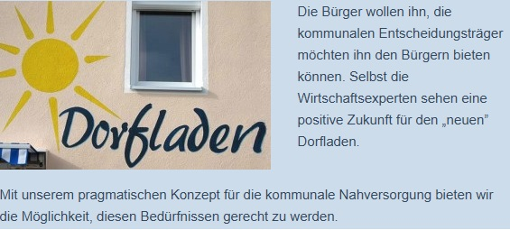
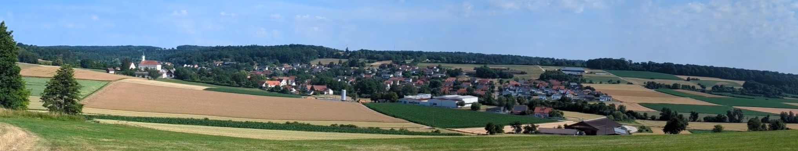
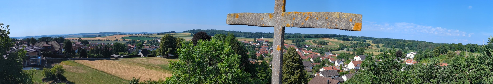
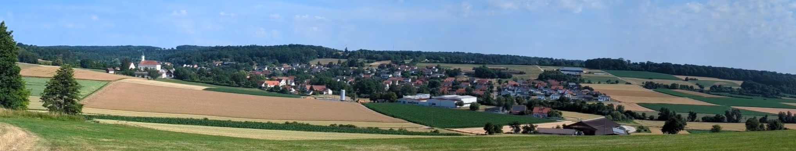
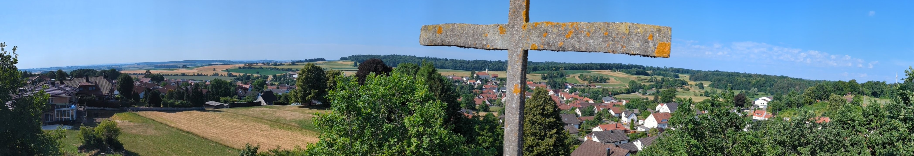
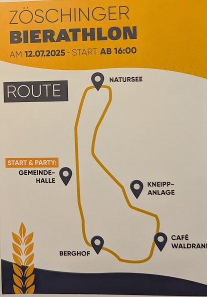
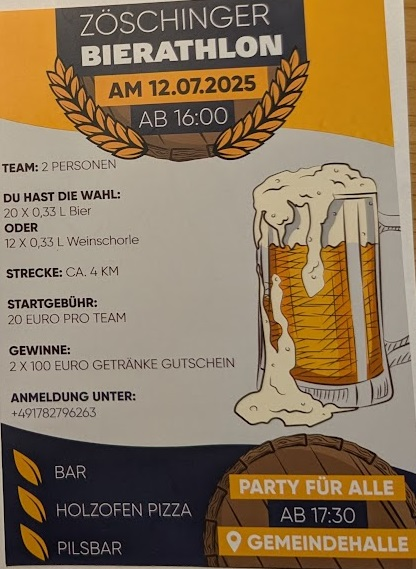

Utz Lebensmittel Großhandel (Ochsenhausen)
Großhandel für Trockenwaren, Konserven und Molkereiprodukte.
Zur Website
 



Unser Dorfladen ist mehr als nur ein Geschäft – er ist ein lebendiger Mittelpunkt unserer Dorfgemeinschaft. Seit über 20 Jahren versorgen wir Zöschingen und Umgebung mit frischen Lebensmitteln, regionalen Produkten und allem, was man für den Alltag braucht.
Ob frisches Brot vom Bäcker, Obst und Gemüse aus der Region, eine große Auswahl an Wurst- und Fleischwaren aus unserer Frischetheke, Zeitschriften, Milchprodukte oder kleine Alltagshelfer – bei uns finden Sie alles, was Sie brauchen. Und das mit einem freundlichen Lächeln und persönlichem Service.
Ob zum Geburtstag, Jubiläum oder einfach als liebevolle Aufmerksamkeit – unsere Geschenkkörbe werden individuell nach Ihren Wünschen zusammengestellt. Wählen Sie aus regionalen Spezialitäten, frischen Produkten und kleinen Überraschungen. Gerne beraten wir Sie persönlich im Laden.

Verschenken Sie Freude und Unterstützung für den Dorfladen! Unsere Gutscheine sind in beliebiger Höhe erhältlich und können für das gesamte Sortiment eingelöst werden. Ideal für Familie, Freunde oder als kleines Dankeschön.


Starten Sie den Tag gemütlich bei uns im Dorfladen! Jeden Mittwoch und Samstag bieten wir ein liebevoll zubereitetes Frühstück mit frischen Brötchen, Aufschnitt, Käse, Marmelade, Kaffee und Saft. Bitte melden Sie sich mindestens einen Tag vorher telefonisch oder im Laden an.
Großhandel für Trockenwaren, Konserven und Molkereiprodukte.
Zur WebsiteDie Metzgerei Hans Bihr ist ein traditionsreicher Familienbetrieb in Dischingen...
Mehr erfahrenDie Bäckerei Römer ist ein echter Handwerksbetrieb mit Herz...
Mehr erfahrenDie Bäckerei Flath in Neresheim ist bekannt für ihre feinen Backwaren...
Zur WebsiteDer Fruchthof Nagel ist ein führender Großhändler für Obst und Gemüse...
Zur WebsiteBiologisch erzeugte Kartoffeln aus eigenem Anbau – direkt vom Hof.
Zur WebsiteRegionale Eier und Nudeln aus eigener Herstellung in Dischingen-Eglingen.
Zur WebsiteLieferant für alkoholfreie und alkoholische Getränke aus der Region.
Hier werden die aktuellen Termine des Dorfes angezeigt.
Datum: 12. Juli 2027
Ort: Gemeindehalle
Hallo Ihr Lieben, macht euch am 12.07.25 bereit für den Zöschinger Bierathlon und die legendäre Party danach.
 Datum: 20. September 2025
Ort: Gemeindehalle
"Schön war die Zeit ..."
Tickets gibt es im Dorfladen.
Einblicke in die Entwicklung des Dorfladens Zöschingen – von der Idee bis zur heutigen Bedeutung.


Adresse, Telefonnummer, Öffnungszeiten
Für vertrauliche Informationen und Dokumente besuchen Sie bitte unsere interne Webseite. Der Zugriff ist nur für berechtigte Mitglieder möglich. Bitte melden Sie sich mit einem freigegebenen Google-Konto an.
➤ Zur internen Google-Webseite